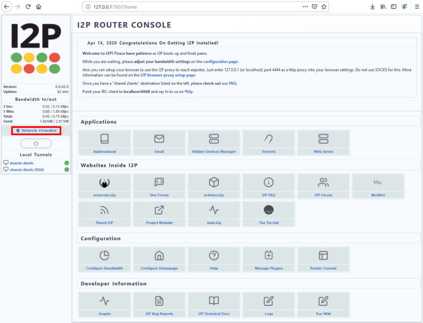
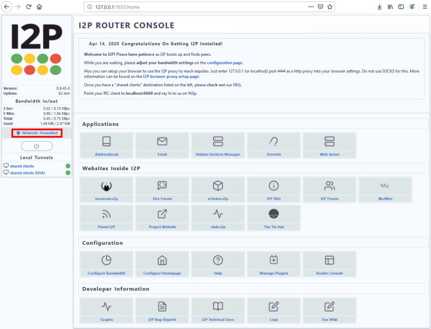

I2P - The Invisible Internet Project
The Invisible Internet Project (I2P) is an anonymous network layer (implemented as a mix network) that allows for censorship-resistant, peer-to-peer communication. Anonymous connections are achieved by encrypting the user's traffic (by using end-to-end encryption), and sending it through a volunteer-run network of roughly 55,000 computers distributed around the world. Given the high number of possible paths the traffic can transit, a third party watching a full connection is unlikely. The software that implements this layer is called an "I2P router", and a computer running I2P is called an "I2P node". I2P is free and open sourced, and is published under multiple licenses.

I2P is a decentralized P2P network, so its operation relies on its community. It encrypts your traffic with end-to-end encryption and routes it via a volunteer-maintained network. This network is scattered all over the globe and consists of over 50000 devices.
With your traffic dispersed around the world, it will be very difficult to spy on.
I2P is a highly secure network. Here’s why:
There are a few key differences between I2P and Tor; chiefly, it is a closed network that cannot access outside sites (it can only access sites that end with “.i2p”). This is unlike Tor, which can be used as a regular web browser in addition to accessing “.onion” sites. Also unlike Tor, the I2P network is peer-to-peer and relies on each user to act as a node. It wraps transmitted data in multiple layers of encryption that travel in unidirectional tunnels through random intermediaries, which makes it particularly hard to profile its users. This is in stark contrast to Tor traffic, which has an easily-distinguishable fingerprint.
Other differences include the fact that I2P uses a method of routing known as Garlic Routing (as opposed to Tor’s Onion Routing), which means that data packets are grouped and encrypted together, breaking off at the correct destination per their delivery instructions. This means there is no way for observers to know how many layers are being used, and more importantly, no way to read what is being sent in the data packets. I2P also uses its own API protocol and does not rely on SOCKS, unlike Tor.
In general, I2P is considered to be more secure than Tor. While it is true that your IP address is displayed in the list of nodes connected to the network, there is no way to know what sites your are visiting, and this situation can be remedied by connecting to I2P through a VPN, through Tor, or even a combination of VPN and Tor. It does not work with Tails, however, as it requires special configurations in order to operate.
Pros
Cons
First, you will need to install the I2P software, which is available for most major operating systems, including Windows, Mac OS X, Linux, and Android. It is not available for iOS, however. The latest release for Windows, I2P 9.5, is named “Easy Install”, as it does not require additional downloads in order to use. This version is recommended for Windows 10 users. The installation process is very easy and only requires a couple of inputs from the user (preferred installation language and file path for installation). If you are installing a different version or using a non-Windows operating system, you will also need to download and install Java.
I2P must be started before attempting to access its network (just like any other application) and then it can only be accessed in an I2P-configured browser. To configure your Firefox browser properly for I2P access, go to Settings and then Network Settings, down at the bottom, then do the following:
Change the Configure Proxy Access to the Internet option to “Manual proxy configuration”.
In the “HTTP Proxy” field, type “127.0.0.1”, and “4444” for the “Port”.
In the “HTTPS Proxy” field, type “127.0.0.1”, and “4444” for the “Port”.
In the “No proxy for” field, type “localhost, 127.0.0.1”.
Click OK to update the settings.
The installation can be a little difficult for new users, but you can find all the info you need on I2P official site.
In general I2P it's a poweful tool for those who seek to connect into darknet markets at the moment, since tor its getting massive ddosed. It can be a bit slower than the normal web browsing experience. Also like Tor, it does not render its users totally anonymous. It does, however, do a great job at helping users protect their privacy, and many would say an even better job than Tor.
Sources:
I2P official site
Wikipedia

How I2P works
I2P is a decentralized P2P network, so its operation relies on its community. It encrypts your traffic with end-to-end encryption and routes it via a volunteer-maintained network. This network is scattered all over the globe and consists of over 50000 devices.
With your traffic dispersed around the world, it will be very difficult to spy on.
I2P is a highly secure network. Here’s why:
- It uses end-to-end encryption and protects the endpoints of your data route by turning them into cryptographic identifiers, secured with public keys;
- I2P’s uni-directional tunnels separate incoming and outgoing traffic and provides more anonymity. Because of these inbound and outbound proxy routers, senders and recipients don’t need to reveal their IPs;
- Unlike Tor onion routing, I2P uses so-called garlic routing. This divides your message into smaller messages, called cloves. These are all encrypted and travel separately until their destinations. As a result, it is almost impossible for an interceptor to get hold of the whole message and perform traffic analysis;
- The system is completely decentralized. As mentioned above, I2P is spread around thousands of different devices and doesn’t rely on a single entity. If one device is hacked, it won’t compromise the whole system.
I2P vs TOR
There are a few key differences between I2P and Tor; chiefly, it is a closed network that cannot access outside sites (it can only access sites that end with “.i2p”). This is unlike Tor, which can be used as a regular web browser in addition to accessing “.onion” sites. Also unlike Tor, the I2P network is peer-to-peer and relies on each user to act as a node. It wraps transmitted data in multiple layers of encryption that travel in unidirectional tunnels through random intermediaries, which makes it particularly hard to profile its users. This is in stark contrast to Tor traffic, which has an easily-distinguishable fingerprint.
Other differences include the fact that I2P uses a method of routing known as Garlic Routing (as opposed to Tor’s Onion Routing), which means that data packets are grouped and encrypted together, breaking off at the correct destination per their delivery instructions. This means there is no way for observers to know how many layers are being used, and more importantly, no way to read what is being sent in the data packets. I2P also uses its own API protocol and does not rely on SOCKS, unlike Tor.
In general, I2P is considered to be more secure than Tor. While it is true that your IP address is displayed in the list of nodes connected to the network, there is no way to know what sites your are visiting, and this situation can be remedied by connecting to I2P through a VPN, through Tor, or even a combination of VPN and Tor. It does not work with Tails, however, as it requires special configurations in order to operate.
I2P pros and cons
Pros
- Highly secure network, protecting you from hackers, third-party surveillance, and other interceptors;
- Uses packet switching, which distributes balancing across different peers, so performance is more efficient.
Cons
- Difficult installation and usage. It requires quite an extensive installation process and browser configuration for it to work. However, there are plenty of accessible online tutorials; Potential vulnerabilities. In 2014, I2P experienced a zero-day vulnerability and exposed around 30,000 users. A 2017 study later revealed that a variety of other I2P vulnerabilities were also exploitable;
- Mandatory logging. Users have to be logged in to the system for their content to be accessible;
- Less anonymity when browsing indexed sites. I2P can’t guarantee anonymity when you browse indexed sites, so it is not that private when you browse the surface web. Using VPN protection can solve this problem;
- A smaller user base than Tor means I2P has fewer network nodes and is marginally more vulnerable to attacks.
I2p Installation
First, you will need to install the I2P software, which is available for most major operating systems, including Windows, Mac OS X, Linux, and Android. It is not available for iOS, however. The latest release for Windows, I2P 9.5, is named “Easy Install”, as it does not require additional downloads in order to use. This version is recommended for Windows 10 users. The installation process is very easy and only requires a couple of inputs from the user (preferred installation language and file path for installation). If you are installing a different version or using a non-Windows operating system, you will also need to download and install Java.
I2P must be started before attempting to access its network (just like any other application) and then it can only be accessed in an I2P-configured browser. To configure your Firefox browser properly for I2P access, go to Settings and then Network Settings, down at the bottom, then do the following:
Change the Configure Proxy Access to the Internet option to “Manual proxy configuration”.
In the “HTTP Proxy” field, type “127.0.0.1”, and “4444” for the “Port”.
In the “HTTPS Proxy” field, type “127.0.0.1”, and “4444” for the “Port”.
In the “No proxy for” field, type “localhost, 127.0.0.1”.
Click OK to update the settings.
The installation can be a little difficult for new users, but you can find all the info you need on I2P official site.
In general I2P it's a poweful tool for those who seek to connect into darknet markets at the moment, since tor its getting massive ddosed. It can be a bit slower than the normal web browsing experience. Also like Tor, it does not render its users totally anonymous. It does, however, do a great job at helping users protect their privacy, and many would say an even better job than Tor.
Sources:
I2P official site
Wikipedia